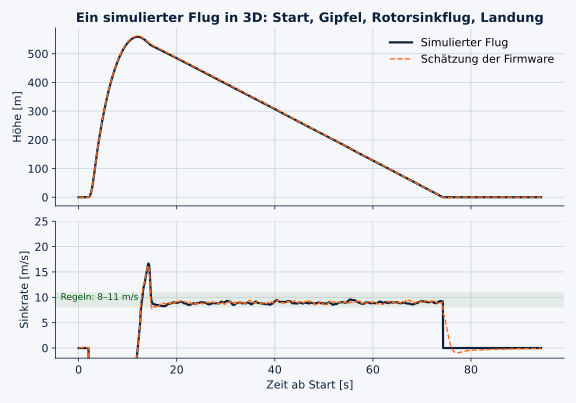
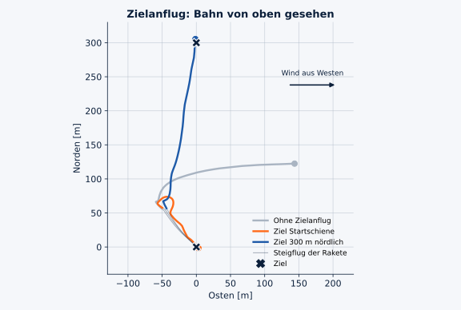
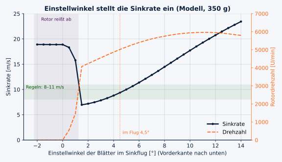

Test & Flug
Was wir messen, teilen wir.
Hier dokumentieren wir Vorversuche und ergänzen nach dem Start die Messdaten unseres CanSat. Die Werte unten stammen noch aus einem Rotor-Vorversuch und aus Simulationen, nicht aus einem Flug.
Aktueller Stand
Rotor-Vorversuch am Autofenster
Ein früher Versuch mit einem 96,9-g-Testmodell und 8° Rotorblattwinkel. Die Fahrgeschwindigkeit diente als Anströmung.
| Lauf | Fahrgeschwindigkeit | Gemessene Kraft | Winkel zur Horizontalen |
|---|---|---|---|
| 1 | 48 km/h | 2,3 N | 50° |
| 2 | 70 km/h | 3,5 N | 30° |
| 3 | 70 km/h | 3,5 N | 30° |
Simulation
Wir fliegen am Computer, bevor wir fliegen.
Unsere Flugsoftware läuft unverändert in einer 3D-Simulation am PC: Rakete, Auswurf, Wind mit Böen, GPS und ein Rotor, dessen drei Blätter einzeln gerechnet werden. So testen wir 31 Flugszenarien, auch mit kaputten Sensoren.

Ein ganzer Flug
Start, Gipfel in ca. 560 m, Rotorsinkflug mit 8,9 m/s, Landung. Die Firmware kennt ihre Höhe auf etwa 1,5 m genau.

Zielanflug
Der Rotor neigt sich und lenkt den CanSat zum Ziel: Landung 3 m neben der Startschiene. Ohne Lenkung treibt ihn der Wind 189 m weit.

Einstellwinkel als Bremse
Der Einstellwinkel der Blätter stellt die Sinkrate ein, im Flug sind es 4,5°. Unter 1,5° reißt die Strömung ab, und der CanSat fällt.
Was passiert, wenn etwas schiefgeht?
| Fehler | Vorher | Jetzt |
|---|---|---|
| Auswurf 3 s zu spät | Rotor öffnet nie, Aufprall mit 45 m/s | Rotor dreht nach 1,2 s, 8,9 m/s |
| Lagesensor fällt beim Andrehen aus | Dose hängt 60° schräg, bis 16 m/s | Lage nach GPS korrigiert, 9,0 m/s |
| Drehzahlsensor tot | 13,5 m/s | erkannt am Bremsen, 9,4 m/s |
| Luftdrucksensor friert ein | fällt mit 13,4 m/s | erkannt, 8,7 m/s |
Simulation selbst ausprobieren
Nach dem Start
Die Flugauswertung kommt hier dazu.
Wir ergänzen Telemetrie, Temperatur- und Druckverlauf, Flugphasen sowie Erkenntnisse aus der Landung, sobald die Messdaten vorliegen.
Mehr über unsere MissionCanSat Austria
Team SWASH entwickelt das Projekt im Rahmen des österreichischen CanSat-Wettbewerbs von ESERO Austria.